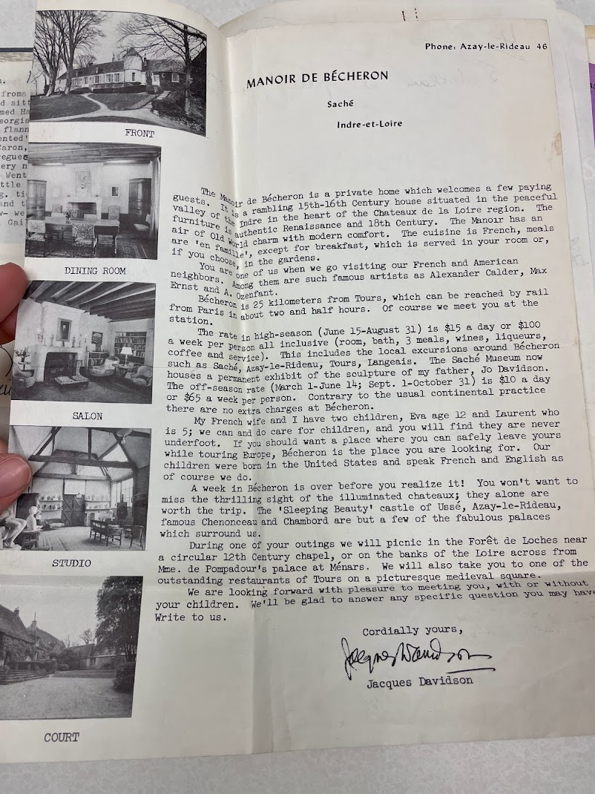

Took a motor from travel agency-after breakfast in our fancy round sitting room. Drove all around Paris the driver named Harvey had a daughter named at Waycross Georgia. Went to Lubin's for perfrume (had the pink flannel affair that Harriet had given me- REsented') Walked around the circle- Place de Vandome to Caron, The Ritz Hotel, and a jewellers where I was intregued by a Jewelled bird. But did NOT get it! To a very nice resturant in the Bois for lunch Le Pre Catalan. Went then to both sides of the Sien and got some little prints of Paris. R.R. station and Tourist Agency|reg. tickets. We had our evening meal at the Bristol and then set out for the Casion deParis. Very amusing show- we stayed thro' half of it but felt we needed sleep. Gail got a cab by her shrill whistle!"
 STATUE IN THE DAVIDSON'S GARDEN, PICNIC IN THE
FORREST.
STATUE IN THE DAVIDSON'S GARDEN, PICNIC IN THE
FORREST.


July 26, 1955 Brussles - Dear People: We are just about to take off for Copenhagen and are sit-ting around so I will try to send this second intallement of our trip report. If I remember correctly, the last letter came from the boat. We arrived in Cherbourg and got safely on the train to find that it was over 90. We nearly died on the ride to Paris. Very unairconditioned train and blazing sun. The first thing we did when we arrived at Le Bristol was fall in a cold tub. WE went out for dinner later and cele-brated with Cherrie Jubilee. Very Tasty! The next day Mrs. Behrend hired a car and guide and we drove all over Paris. It is so beautiful but so expensive? $90 a minute to breath! We did a bit of shopping, had lunch in the Bois de Boulougne shopped on the Left Bank, got train tickets and that night went to the Casino de Paris. Pretty naked ladies I must say. We were not carried away by it but see it, so that is that. The next morning we were up at the crack of dawn and off to Tours. the man and his wife who ran the Manior Bercheron, where we stayed as a member of the family were terribly nice. We arrived in time for lunch and got in a little car and went through some beautiful country to see some of the chateaux. We enjoyed it tremendously. You can see where all the old French painters got all their inspirations. Lovely rivers, old mills and beautiful trees. That night after dinner we went to a nearby chateau, Azay-le-Rideau which was illuminated. Just like fairyland. They also had a sort of play very cleverly done just done with voices and lighting which told the history of the building. We will never forget it. Thursday, the Davidsons, our hosts and their little boy and ourselves went on another chateaux trip which was just a grand as the day before. We had a picnic on the way and tea on the way home. Great fun. The only thing that marred the trip was another guest who arrived who knew all about everything and told it in the loudest of voices. I got in a ter-rible row with him about sports. Everyone was on my side but you couldn't get a word in edge wise. It was was rather funny to look back on but I nearly had a nervous breakdown when it was going on. Friday we left Tours at about eleven and got back in Paris for lunch. After the lovely meal we charged out on foot to do some shopping.

AZAY-LE-RIDEAU

Did letter and left the Astoria with Otto and the ford car- our new car and driver for our jaunt.Went to Bang andlooked at fur jackets.And then to jensens where Gail made a purchase. To Weacvers embroidery shop. Then to Oscar Davidson's where the Menu is several yards long- allopen faced sadnwhiches. Didn't think so much ofthis place. Then to the Permente again and then back to the astoria to pack up our things and left for the Palace Hotel where we had a rather nice room etc. Then we rushed out to the Rosenborg Palace to see the jewels etc. It was close in about half an hour so didn't have too much time.After this we drove out to the Royal Deer Park. A large building in a park- open fields with many herds of deer roaming about
In the evening we were invited to Mr Dessau's f or dinner. his son William came in to get us. Very nice and friendly. Almost everyone seems to speak English. They get a terrific lot of it in the schools. Mrs Dessau looks very young Had another son there-ROul- and his very sweet bride of a few months. She was born in Mexico and in fact IS Mexican but lived a long time in Texas. Does notnSpeak Danish. After meeting them all Mr Dessau Asked us to see his garden. He had several hundred parakets in a huge cage- like a big room- and arranged so they could fly in and out. Then he showed us his special pets Two tame Kangaroo!! They hoppedout of their enclosure and like to me patted. Very tam. He has had them several years. T gave Mrs Dessau one of my little trimmed Christmas trees And to the bride a little "shelf" which was really Mexican and I had trimmed it over and remade it They werre very pleqsed. had a nice evening and enjoyed them all. Also we LIKE the Toborg beer better than ant other kind!!

Still at the Palace Hotel. WEnt to several fu places One especially Mrs Dessau told us of. But after we had seen others went back to Bangs, which is really the most "swell"establishment- and bought the short jacket we liked in the first place. then we went to Friendrichborg palace,where we went in. A huge place with mucH to see. Orders of the White Elephant. etc. IN- Took pictures of the storks on the chimney tops. They return these nests about May 8th every year. WEnt to a vehyrm charming palace- a resturant where we had a view of the castle, looking over a lake. then we proceeded to Friedensborg palace, the summer r Residence of the King. We were allowed to see just a series of rooms on the lower floor. All wrapped up in covers and the curtains all covered up. OLD FASHioNeD BUT NICE To elsinore -but did not go in.Called KronbergCastle Drive back along the coast.Lots of bicycles- many with little children clinging on the back. One little boy calmly eating a sort of ice cream cone- while his mother rode along with him hanging on. Again we wandered over to Tivoli and had a simple meal over there. and went to bed early as we had a days jaunt before us for the next day- to bournhiolm , the danish Island. An air plane to get there!

The Manoir de Bécheron is a private home which welcomes a few paying guests. It is a rambling 15th-16th Century house situated in the peaceful valley of the Indre in the heart of the Chateaux de la Loire region. The air of Old World charm with modern comfort. The cuisine is French, meals are 'en famille', except for breakfast, which is served in your room or if you choose, in the gardens. You are one of us when we go visiting our French and American neighbors. Among them are such famous artists as Alexander Calder, Max Ernst and A. Ozenfant. Bécheron is 25 kilometers from Tours, which can be reached by rail from Paris in about two and half hours. Of course we meet you at the station. The rate in high-season (June 15-August 31) is $15 a day or $100 a week per person all inclusive (room, bath, 3 meals, wines, liqueurs, coffee and service). This includes the local excursions around Bécheron such as Saché, Azay-le-Rideau, Tours, Langeais. The Saché Museum now houses a permanent exhibit of the sculpture of my father, Jo Davidson. The off-season rate (March 1-June 14; Sept. 1-October 31) is $10 a day or $65 a week per person. Contrary to the usual continental practice there are no extra charges at Bécheron. My French wife and I have two children, Eva age 12 and Laurent who is 5; we can and do care for children, and you will find they are never underfoot. If you should want a place where you can safetly leave yours while touring Europe, Bécheron is the place you are looking for. Our children were born in the United States and speak French and English as of course we do. A week in Bécheron is over before you realize it! You won't want to miss the thrilling sight of the illuminated chateaux; they alone are worth the trip. The "Sleeping Beauty" castle of Usse, Azay-le-Rideau, famous Chenonceau and Chambord are but a few of the fabulous palaces which surround us. During one of your outings we will picnic in the Forêt de Loches near a circular 12th Century chapel, or on the banks of the Loire across from Mme. de Pompadour's palace at Ménars. We will also take you to one of the outstanding restaurants of Tours on a picturesque medieval square. We are looking forward with pleasure to meeting you, with or without your children. We'll be glad to answer any specific questions you may have. Write for us.
Cordially yours, (signiture) Jacques Davidson